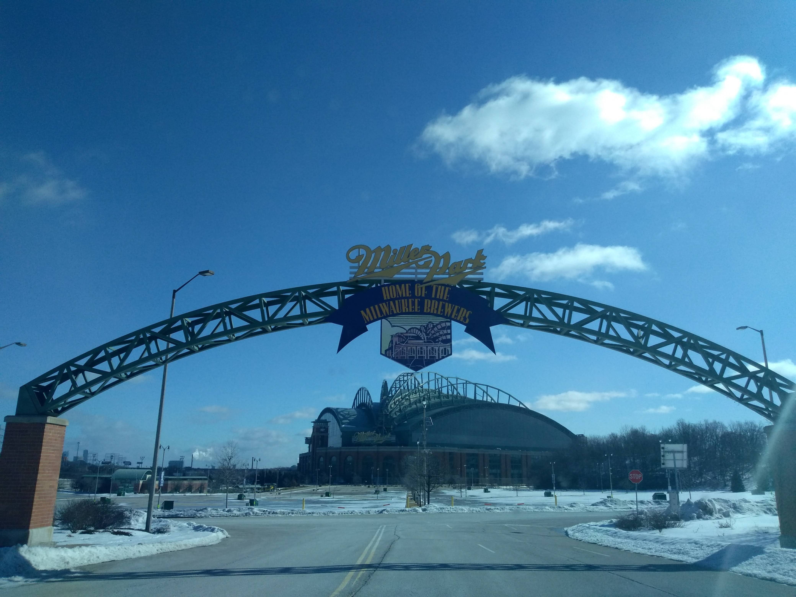
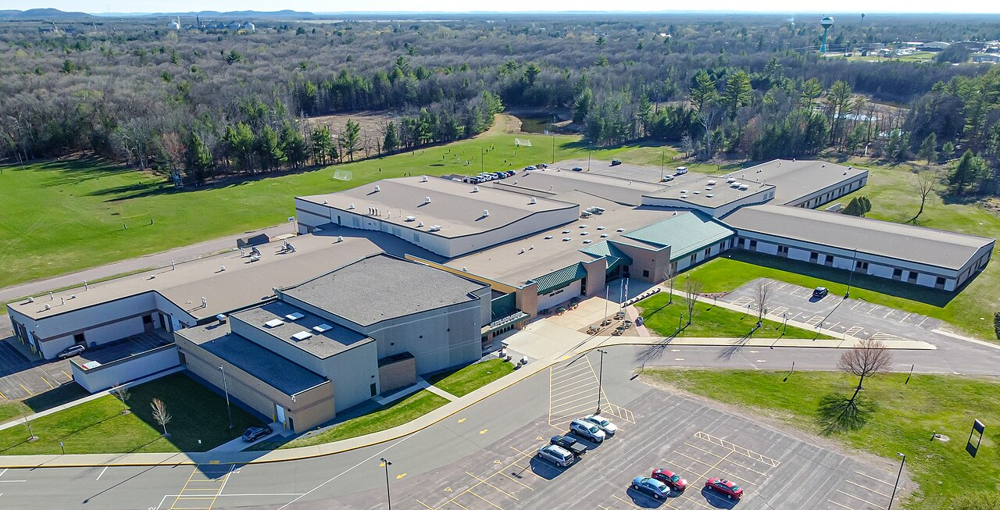
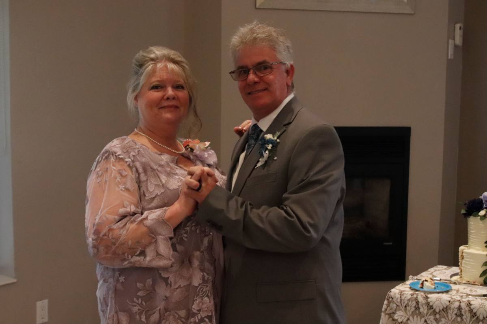
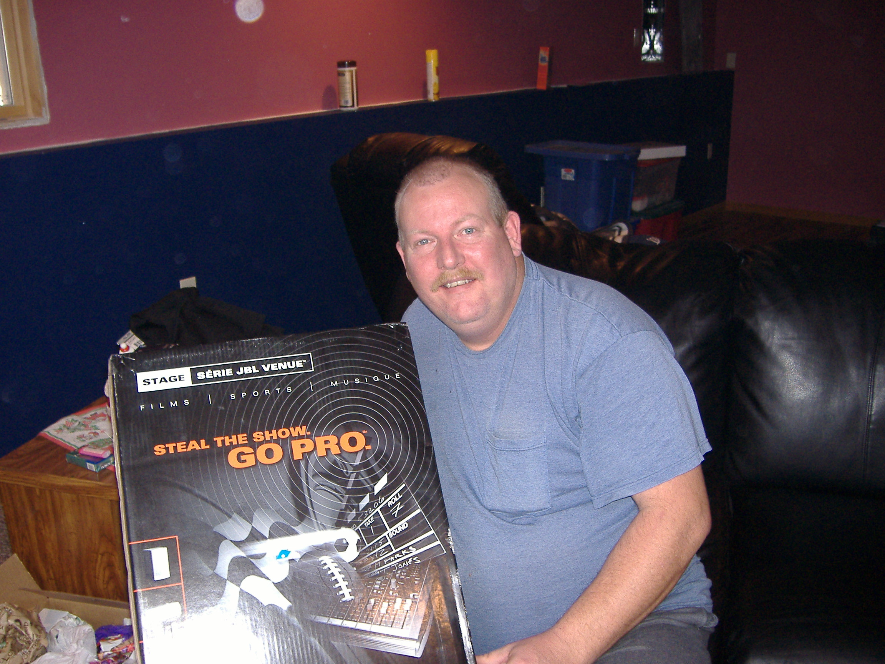
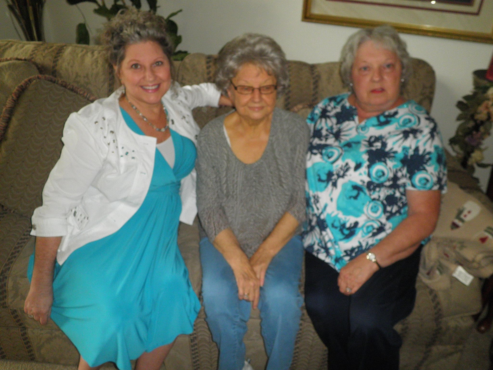
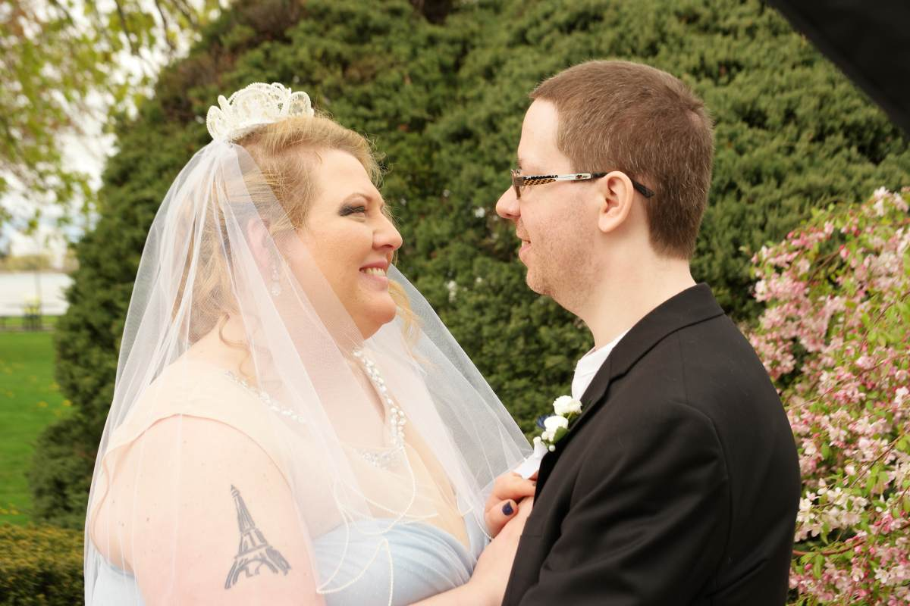

I grew up in Wisconsin. My parents raised me away from the big city. Due to privacy concerns I have deleted some of my paragraphs, years, names, and dates. I grew up about a 20-minute drive to Wisconsin Dells. It's home to the largest waterparks. Where I feel at home is always going to be the greater Milwaukee area. Most of my family lives in the area.
My parents went to school around Milwaukee, WI. They met after high school and married shortly after. When I think of places that I loved being, it was grandma's house. Wisconsin is home to more than 15,000 lakes. We spent most of our summers enjoying swimming in some local lakes. We went fishing every year, and my dad enjoyed ice fishing with his old buddy Jack. I remember going ice fishing once, that was my last time. We had spent quite a few summer vacations to Eagle River, WI. We would stay on the chain of lakes. When I picture home, I can see the corn fields, pine trees, the lakes. The friday night fish fry. Where you can almost tell every neighbor is grilling out all summer long. My parent's adapted to winters and cooked in the garage even. We have some of the best cheese. It's something I get every time I visit family. The natural beauty of Wisconsin, it's not about the beer we have, or what lake is the best spot for fishing, it's the culture we've made.
I went to Adams Friendship High School. Most of the classes I did enjoy were my electives in desktop publishing, keyboarding, accounting, French, and webpage design. I went to school from 2004 to 2007. I graduated earlier than my class.
When I moved to Windsor, I finally knew I wanted to go back to school. In 2025, I narrowed down my list of places I wanted to go to college and applied for St. Clair College in Computer Programming. I took ACE distance in communications before classes began in 2026.
My main family lives in Wisconsin. I have a brother and one niece. My mom remarried after my dad passed away. My dad passed away a few days after my 20th birthday in 2010. He was 45 years old. I can still remember him telling me as a child he wouldn't live forever.
All of my grandparents are gone already. On my mom's side, we lost my grandpa in 1998. I don't really remember him much other than that he was Italian and he didn't like his picture taken. My grandma, she was my favorite, Audrey. I spent every summer with her for two weeks, sometimes a bit longer. My cousins lived next door, so it was always full of events. We lost her on Halloween in 2013 to pancreatic cancer.
My mom has 2 siblings, Aunt Gina and Uncle Tom. I have a cousin, from Aunt Gina; she graduates college in 2027. My cousins from Uncle Tom are all out of college. They are the one's who lived in a side by side next to grandma after grandpa had passed. Monica became a massage therapist, who married first in 2020, and they have 2 beautiful children now. Laura went to culinary school. I went to her wedding in 2019, and they now have a little boy. Jenna is the youngest; she's a vet tech. She was born on my mom's birthday. I can remember holding her when she was born in 2000. She was the first baby I ever held. They all live close to Uncle Tom in Waterford, WI.
My dad's side isn't as exciting. I won't be mentioning my grandfather. My grandma Maryann was an interesting woman. She could see a rummage sale sign a mile away. Needless to say, all our Christmas and birthday gifts were always from sales she found. She cooked alot of german food, I didn't like. She used to have a genuine draft in her hand before lunch. If she saw a flower on the side of the road she really liked, she had a small shovel and extra pots in her trunk even. One time, she saw some nice rocks by our home she had to grab them for her garden back in Mikwaukee. Grandma Maryann was born in 1945 and passed away from cancer in 2011. She had 5 children.
My dad was the oldest born in 1965; Aunt Christine in 1968, Uncle Mike in 1970, and then grandma did remarry and have Uncle Kevin in 1978; and Aunt Gina in 1979.
The first image is the Milwaukee Brewers, located in Milwaukee, WI. This is around my hometown.
The second image is my highschool.
The third image is my mom and husband at our wedding in 2023.
The fourth image is a picture of my Dad around 2005 for Christmas.
The fifth image is my grandma with her siblings a few short months before she passed away in 2013.
From left to right: Great Aunt Susie, Grandma Audrey, and Great Aunt Kathy.
I decided to remove some pictures for privacy reasons, and added our wedding photo as the last image.